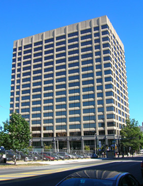
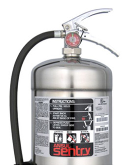
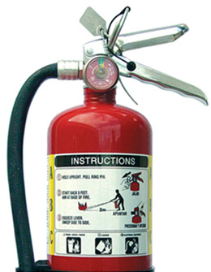
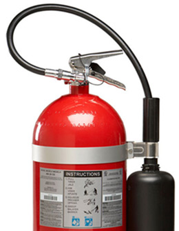
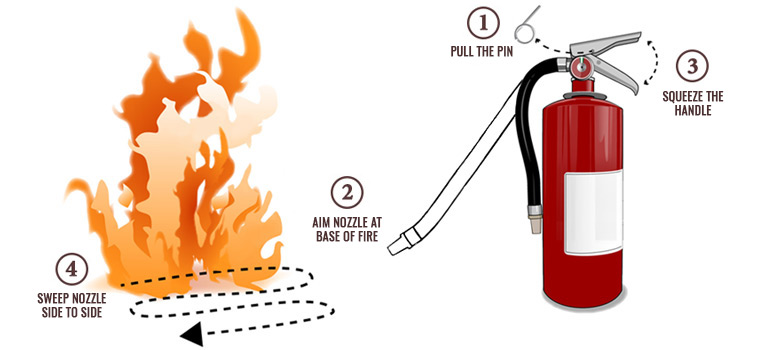

Heating Equipment
The use of portable space heaters and fans is prohibited. If you have heating or air conditioning issues contact facilities or your administrator.
Thankfully, many CHOP employees do not have a lot of experience with fire. In the event of a fire, being prepared and knowing what to expect can be life-saving!
Generally speaking the temperature of a fire at ignition can be above 900 degrees Fahrenheit and will increase exponentially from there every minute that it burns.
Consumers are often unaware that household items such as furnishings and electronics are made of highly combustible materials that contain petroleum based products such as plastics and polyurethane foam. These items can ignite and burn rapidly and engulf a room in minutes.
Fire produces smoke and toxic gases that are equally or more deadly than the heat and flames. In a fire, the majority of injuries and deaths occur due to exposure to hazardous smoke and toxic gasses released during the fire and not actual burns. In addition, smoke often obscures vision and thereby decreases the ability of fire victims to escape.

Fire is the rapid oxidation of a material in the exothermic chemical process of combustion, releasing heat, light, and various reaction products.
Fires are prevented when CHOP employees recognize common fire hazards in healthcare and business settings, and report any concerns to managers/supervisors, security, and the office of Environmental Health and Safety.
CHOP employees need the ability to use CHOP’s fire safety tools and procedures to help themselves and others in the event of a fire. Employees should:
Speak with your manager and go to the intranet to see fire plans for your work area.
Fire procedures vary by location and are based on the type of patient care being provided. Be proactive and learn the specifics for your site and building type. Fire Plans are available for all CHOP locations and are located on the Environmental Health and Safety webpage on the CHOP intranet site.
Ask yourself the following questions:
The presence of oxygen, which accelerates a fire, and the challenge of evacuating our sickest patients are two factors that make hospital fires particularly dangerous.
While fire or smoke events are rare at CHOP, they do occur. These events can occur due to cooking or catering, construction related activities such as welding, electrical equipment malfunction, or smoking.
Let’s review some common hazards and ways to prevent them.
The use of portable space heaters and fans is prohibited. If you have heating or air conditioning issues contact facilities or your administrator.
Extension cord and multiple outlet strip misuse are the most common cause of office fires! Make sure cords and plugs are in good condition; don’t overload electrical circuits, outlets or power-strips.
Microwave ovens and coffee makers are the only approved devices allowable for cooking. Toasters, toaster ovens, hot plates, sternos, electric grills and stoves used for food arming are prohibited devices. When cooking or reheating food items, pay special attention to package directed cook times and never walk away from a microwave while it is in operation!
Keep storage of combustible materials to a minimum. Maintain proper clearance as stored materials may obstruct exits, walkways, electrical panels, or sprinklers. Ensure materials and equipment do not impede fire safety devices or passageways.
Smoking is prohibited on CHOP owned property. Obey smoking rules and “No Smoking” signs.
Flammable liquids, such as alcohol hand gel and solvents, can lead to dangerous “flash” fires. Store and handle liquid chemicals properly and report or clean up spills promptly.
Improper storage of oily rags, chemicals or leaves can lead to spontaneous combustion. Place oily rags in metal containers with lids and remove daily.
U.S. fire departments respond to an average of 7,000 home structure fires per year in which a microwave oven was involved in ignition. These fires caused an annual average of two civilian deaths, 140 civilian injuries, and $22 million in direct property damage (www.NFPA.org). Ensure that you are reading the package labels before setting your microwave time. Never leave a microwave unattended while in operation.
Keep doors closed! Many doors are fire-rated to prevent the travel of fire and smoke from one area to another. Door closure devices are intended to automatically close doors. With closed doors, smoke and fire can be contained long enough to allow people to escape.
R.A.C.E. is an all hazard approach to emergency situations. It is used at all CHOP locations and serves as a memory aid that helps employees recall the correct steps to use during a fire or other emergency situation.
RESCUE
Rescue anyone from immediate danger
ALARM
Alert security or the fire department
CONTAIN
Close doors to contain the threat
EXTINGUISH/EVACUATE
Evacuate yourself to safety
When a fire alarm is activated at Main Hospital, Wood Center or Seashore House, you will hear one or more of the following:
Unit procedures may vary based on the type of care provided to patients and other unit specific conditions. Fire plans include instructions for what to do when the alarm sounds and are based on the location of the alarm condition:

When a fire alarm is activated at one of our high rise buildings a “staged evacuation” is employed:
When a fire alarm is activated at one of our satellite locations you should immediately evacuate the building and head to your predetermined meeting location.
*Special procedures for surgical procedures (sedated patients and patients undergoing procedures) should be evacuated only when a fire is confirmed. Until a fire is confirmed, surgical staff should standby for further information, preparing for evacuation procedures if necessary.
Only use fire extinguishers if the fire is small, and you have a clear path of escape. Trying to tackle a fire on your own can be dangerous and cause you to use up valuable time when help is needed elsewhere. When in doubt, use R.A.C.E. as your first line of defense against fire. If you choose to extinguish a fire, be sure to pull the nearest fire alarm pull station prior to fighting the fire.
CHOP uses three common types of fire extinguishers. Pay special attention to the pictograms located on each extinguisher, as these give you general information as to what type of fire each extinguisher is capable of fighting.

Used for paper, wood, cloth, and plastic fires; filled with air-pressurized water.

Used on all types of fires; filled with powder and pressurized with nitrogen.

Used for electrical and flammable liquid fires; contain carbon dioxide, a non-flammable gas.
Remember the acronym PASS if you encounter a small fire and are able to quickly access a fire extinguisher. PASS should help you recall the correct steps for using the extinguisher during an emergency.

P
Pull the pin that locks the extinguisher handle to release.
A
Aim the nozzle of the extinguisher at the base of the fire. Do not aim it at the top of the fire.
S
Squeeze the handle to release the substance inside the extinguisher.
S
Sweep the extinguisher from side to side at the base of the fire in order to coat the area with the extinguishing substance.

TOP